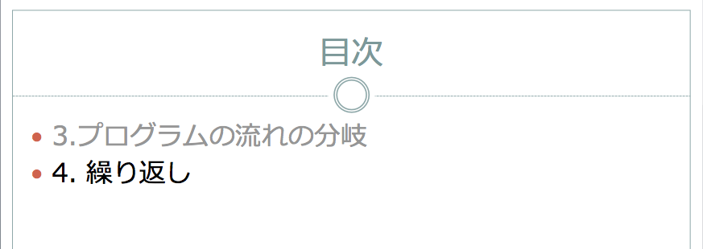

教材 ppt のレイアウト半自動作成
Table of Contents
#+File Created:
#+Last Updated:
ここで紹介した機能をもつプログラムは以下に置かれている.
https://github.com/saito1369/work-lib-Basic
1 はじめに
発表資料, 講義資料作成には PowerPoint を使っている.
PowerPoint によるプレゼン及び講義での利用については, 様々な考察がなされているようである(PowerPoint プレゼン とかで検索すれば山ほどでてくる).
そんな中, 自分が講義等で使ってみて感じた一番の感想は,
「今このページが全体の中でどこにいるのか, というのがこのままじゃイマイチわかりにくいんじゃないかなぁ」
ということである.
PowerPoint 的な資料(というか紙芝居的に, 一次元的に見せていく方法全般)では, 常にそれぞれのスライドしか見えてない状態なので, 今いる場所が全体の中のどのへんにいるのか見失いがちなのではないか？
全体というのは, 今回の講義の中で, どれくらい進んでるのかとか, あるいは15 回の講義全体の中でどれくらいの位置に今いるのか, この章の中でどこを今やってるのか(どの階層にいるのか)とか, そういったことである.
今どういう位置づけの場所をやってるのか, がわからなければ当然内容の理解も厳しくなるわけである.
普通は教科書の目次構造がこのガイドの役目を果たしてるのではと思われるのだが, 教科書がある科目ばかりではないのでどーしたもんかなと思っている.
自分自身でも正直わかりにくいことがあったので, 恐らく学生もそうなんじゃないかなぁ, と思ってとある学生に聞いてみた.
あとどれくらいで講義が終わるのか, 早くおわってさっさと帰れそうか, 遅れててギリまでかかりそうなのか, わかったら良いと思う, という答えが返ってきた.
うーん何か質問の趣旨とは違うような気もするけど, とりあえず学生も講義の中で今いる位置を把握したいんだろうと思うことにしよう.
2 やりたいこと(目的)
ここで実現したいと思ってることは以下である.
「PowerPoint の資料一枚いちまいで, いろんな意味での全体における位置がぱっとわかるようにしたい.」
教科書はなくても, 一連の資料には教科書のような目次の階層的な構造があるはずである.
その構造と現在地が資料一枚いちまいに記されてて, 敷衍した状態での位置がわかるようになってる感じをイメージしている.
3 調査
最初に見たのは以下の URL である.
http://oshiete.goo.ne.jp/qa/7109697.html
ここで質問されてるのは, それぞれの slide に progress bar みたいなもんをつけたいがどーすればいいか, というものだ.
PowerPoint 資料を作成のちにマクロを動かして, 現在のページが全体のどの位置にあるかを表示する.
これを使うことで, 階層構造こそわからないものの, 1 回の講義及び発表の中で今どのへんにいるのかを視覚的にわかりやすく示せるのではないかと思う.
学生が言っていた, あとどれくらいで講義がおわるのか, ということについてはこれでばっちりわかるんでは？
次に参考になりそうなのが以下の URL にある slideshare である.
http://www.slideshare.net/hamadakoichi/tree-basedmodelsandrandomforests
目次(の階層構造)を最初に見せて, 今やってるところ以外を gray out する.
この表示方法はとってもかんたんだし, 今自分がいるところが全体の中でどこなのか, とてもわかりやすいと思う.
この gray out 方式の目次を一般的にしてより便利に使えるようにしたい.
ただ, 一枚いちまいの slide に情報を載せてるわけではないというてんについては, もう少し考える必要があるかなと思った.
4 やったこと
色々考えたり試行錯誤していくうちに, 目的を達成するために具体的にすべきことがいくつかでてきたのでここでまとめておく.
1 から 4 は今回のやりたいこと(目的)に直接関与していそうな事案.
5 以降は ppt の使い回しや利便性を考えて作成してみたものである.
- 一枚いちまいのスライドに, progress bar をつける.
スライドの左下に, 今どこまで進んでるかを示す bar を作成する.
- 現在のページ数/全体のページ数 としてページ数を追加する.
全体のページ数 の情報がないとあとどれくらいあるのかがよくわからないので.
スライドに右下に置いておくことにする.
- gray out した目次を自動で作成して挿入する.
作成した slide に対して, 別のテキストファイルに目次を書いておくと gray out した目次を自動で挿入してくれる.
目次には階層構造があるのが普通なので, 階層構造もそれとわかるように表示する.
- 階層の情報を各スライドに表示する.
資料の右上には, gray out した小さい目次(簡易版)を載せる
(今見ているスライドとは関係ない場所を gray out することで自分がいる位置が明快になる).
資料の左上には, 今見ているスライドの階層的な目次を載せる
(上の補足的な情報として).
- 章ごとに分割して作成したスライドを統合する
あまりでかい ppt 資料を作るとフリーズしたりするので, 資料は予め章毎にまとまった(内容でまとまった)単位で作成しておく.
必要な部分だけ結合することで次の講義での資料をさくっと作成したい.
内容ごとのまとまりで資料を作ることで再利用がかんたんになるだろう.
- 学生用の資料を自動で作成する
学生は講義を聞いてるだけだとほぼ確実に寝るわけである.
PowerPoint を使った講義では板書をすることがあまり無く, 学生がメモをとったりすることがないので尚更である.
そこで, 講義資料を紙で配って, 重要な部分を穴開きにしといて穴埋めさせたい,
手を動かせば寝る確率は減るだろう.
いちいち学生用の穴埋め資料を別に作るのは超めんどくさいので, 学生用の穴あき資料を自動で作成できるようにする.
学生には見せない slide (演習の答えなど)の削除などもここで行う.
- 教師用の資料を作成
上記のような資料を作って講義をしていると, 穴埋めが色々ありすぎてどこが穴埋めになってるのか, よくわかんなくなってしまうことがある.
大写しになっている slide には穴埋めの情報が書いてないからである.
自分用に, 今回どこが穴埋めになっているのかを示した教師用の資料を自動で作成できるようにする.
これを印刷しておけばどこが穴埋めなのかがわかる.
5 仕様とつかいかた
それぞれの仕事を行う VBA プログラムを作成した.
https://github.com/saito1369/work-lib-Basic/lecture/AutoPowerPointDecoration.bas
以下使い方などの説明である.
5.1 一枚いちまいのスライドに, progress bar をつける
関数名: p02_pageCountsBox
仕様:
今作業している ppt ファイルが hoge.ppt だとする.
default では, 挿入された gray out 目次ページ(後述. p01_grayTOC)以外のスライドの全てに progress bar をつける.
テキストファイル hoge.txt に以下のように書いておくと,
::---:: 5,10
5 page 目と 10 page 目には progress bar をつけない.
テキストファイルの名前は default では ppt ファイルの名前と同じにする(hoge.ppt であれば hoge.txt. 違うファイル名も指定可能).
各々のスライドの左下に図形で作成された progress bar が追加される.
こんな感じである.
全体で 26 page あって, 今は 4 page 目である.
23 page 目. もうそろそろ終りそうだ!! ということがぱっとみてわかる.
5.2 現在のページ数/全体のページ数 としてページ数を追加する
関数名: p03_pageNum
仕様:
default では, 全体のページ数は挿入された gray out 目次ページ(後述. p01_grayTOC)を除く.
テキストファイルに以下のように書いておくと,
::---:: 5,10
5 page 目と 10 page 目は除いてページ数をカウントする.
上記 pageCountsBox と連動する.
各々のスライドの右下に作成される.
26 page 中 23 page 目
5.3 gray out した目次を自動で作成して挿入する
関数名: p01_grayTOC
仕様:
hoge.txt に目次を以下のように書く.
::|||:: * 3. プログラムの流れ 2 ** 3.1. if 文 2 *** 3.1.1. if-then 2 *** 3.1.2. 関係演算子 9 *** 実習 10 **** 新規パッケージの作成 10 **** 実習と演習 12 * 4. 繰り返し 13 ** 4.0. 繰り返しとは? 13 *** 4.0.1. やりたいこと 13 *** 4.0.2. Java での文 15 ** 4.1. do 文 16
hoge.txt の format は以下のような感じ
::|||:: # 目次読み込み用の目印 *(\t)(階層1の目次)(\t)(書きだすページ数) # 注: このページの前に追加する. このページ以降のページ数がずれる. **(\t)(階層2の目次)(\t)(書きだすページ数) ***(\t)(階層3の目次)(\t)(書きだすページ数)
階層構造を示すため, "*" 階層分のアスタリスクを行頭に書く.
タブのあとに, 各々の階層の目次文字列を書く.
タブ区切り(何回でもよい)の最後に書き出すページ数を書く.
このページ数の前のページに目次を追加する.
このページ以降のページ数はずれていくことになる.
出力として, 新しい ppt ファイル(上の処理によって目次が追加された ppt hoge_grayTOC.ppt) が作成される.
追加階層目次のページだけずれを補正, 目次をカウントしないスライドとして追加した txt file も作成される(hoge_grayTOC.txt).
上の目次の階層は
3. プログラムの流れ (略) 4. 繰り返し 4.0. 繰り返し文とは 4.0.1. やりたいこと 4.0.2. Java での文 4.1. do 文
こんな風になっている. 追加される目次スライドは,
(4 に入ります).

(4 の下の階層目次の全体を示します).
(4.0 に入ります).
(4.0 の下の階層目次の全体を示します).
(4.0.1 に入ります).
うーんちょっとしつこいかも知れないが, ちゃんとやるとこうなる筈なのでしょうがない.
どうせ 1 秒程度しか見せないんだからまぁいいかなぁと思う.
5.4 階層の情報を各スライドに表示する
関数名: p04_pageListContents
仕様:
hoge.txt ファイル内の目次データを参照して, gray out した目次情報を書き出す.
各々のページ(右上)に, 今やってる目次の位置を黒い色で, その他の目次の位置を gray out した状態で書き出す.
default では "::|||::" 以下にかかれる目次情報を参照するが, 独自で指定したい場合(あまり細かく書き出したくない場合など)は以下のように書くこともできる.
::###::
1. 背景 1-3
2. 目的 4-6
3. 方法 7-9
4. 結果 10-
::$$$::
3,11-15,18
::!!!::
610 140 8
例えば上記のように書くと, 目次としては最初の階層だけを書くことになる.
次の "::$$$::" 以下に書かれた数値は, 目次を書き出さないページ数をあらかじめ指定するものである.
この例では, 3p と 11p から 15p, 18p には目次が書かれないはず.
目次情報を書き出す場所(default では右上)に色々と書いてあって, ここに情報を載せたくない場合に使う.
"::!!!::" は書かせる場所のパラメータを指定する.
指定されていればこの値を使う. 順に書き出す x 座標, テキストボックスの幅, フォントサイズをタブ区切りで書く.
ここでは, x=610 から幅 140 のテキストボックスを作ってその上に font size = 8 のフォントで gray out された目次を書く.
無ければ default 値を使う.
::###:: 3. プログラム分岐 2-12 3.1. if 文 2-12 3.1.1. if-then 2-8 3.1.2. 関係演算子 9 実習 10-12
の場合の 12 page 目はこんな感じ.
関数名: p05_pageListHierarchy()
仕様:
hoge.txt ファイル内の目次データを参照して, gray out した目次情報を書き出す.
各々のページ(左上)に, 今やってる目次の位置(階層)を書きだす.
::^^^:: 1. 背景 1-3 1.1. はじめに 2 1.2. 歴史 3 2. 目的 4-6 ::&&&:: 1-4,8 ::???:: 10 130 8
"::^^^::" は上の "::###::" と同じで, あればこれを元に階層目次を作成する.
なければ "::|||::" (gray out する目次スライド挿入の情報)と同じ感じで書く.
"::&&&::" はこの情報を書き出さないページ数を指定する.
"::???::" は書き出す場所, テキストボックスのサイズ, フォントの大きさを示す. 無ければ default 値を使う.
以下のように書き出される
5.5 章ごとに分割して作成したスライドを統合する
関数名: p00_collectPpt
仕様:
hoge.pptm を作成(大抵は空の ppt ファイル)
hoge.txt に以下のように書いておく.
::+++:: 0 foos.ppt 1-3,10,45- 1 fuga.ppt * 1 bars.ppt 20,30-40
最初の 0 または 1 については, foos.ppt のスタイルはコピーしない(0), fuga.ppt のスタイルもコピーする(1) という意味である.
二つ目は取り込む ppt ファイル名,
三つ目は取り込むページ数である. "*" は全部という意味である.
実行すると, 上で示されたファイルを統合して新しく hoge_intg.pptm が作成される.
それぞれに付随している txt ファイルも統合されて, 新しい hoge_intg.txt ファイルが作成される.
hoge.txt を読み込むかどうか, output ppt ファイル名が hoge_intg.pptm でいいかどうか聞かれるので指定する.
5.6 学生用の資料を自動で作成する
関数名: p6_flipTextForStudent
仕様:
学生用に, キーワードが(_ アンダーバー等に)置換されたスライドを作成する.
演習問題の答えが載っているスライドを削除する
hoge.txt に以下のように書く
::%%%:: Entrez Gene Entrez ____ * SNP ___ 1,2,3-10,20 HogeFuga Hoge____ 12 ::@@@:: 5,8,11
"::%%%::" の後に置換前, 置換後, ページ数をタブ区切りで書いていく.
すべてのページで, "Entrez Gene" => "Entrez __" と変更(穴あけ)
1, 2, 3-10, 20 ページ で "SNP" を _ に置換.
12 ページ のみで "HogeFuga" を "Hoge____" に変更.
"::@@@::" の後に学生用スライドでは見せないページ数を指定する.
5,8,11 ページは演習問題の答えなので削除.
ほとんどが削除するページならば, 以下のようにして残すページ数を書くことが可能
::===:: 1-4,6,7,9,10
この場合は, 1-4,6,7,9,10 ページは残す. それ以外は削除される.
5.7 教師用の資料を作成
関数名: p7_watermarkForLecture
仕様:
hoge.txt に, 学生用の資料作成のようなテキストファイルが書かれているとする.
穴埋めの部分の文字列をイタリック体及び下線などで目立たせる.
学生用での削除ページには斜め線を目立つように入れる.
5.8 そのほか
5.8.1 目次スライドを消去した新しいスライドを作成する
関数名: p8_removeGrayTOC_asNewName
仕様:
gray out する目次スライドを削除して新しい名前の ppt を作成
5.8.2 目次のフォント大きさを変更
関数名: resizeFontSizeOfGrayTOC
仕様:
目次のフォントが大きすぎてページに入らないことがあるので, その対処
タイトル, 箇条書き部分のフォント大きさを入力するとその大きさに変更する.
6 使用例
https://github.com/saito1369/work-lib-Basic/tree/master/lecture/ppts も参照.
- 元となる ppt 及びテキストファイルの準備
章ごとに作成した ppt のファイル.
- 031_if.pptx
- 041_loop.pptx
各々に付随したテキストファイル
- 031_if.txt
- 041_loop.txt
- 031_if.pptx
- pptm ファイルを作成する
test.pptm:
白紙の ppt ファイル(あるいはタイトルだけ作成)
マクロを import して pptm ファイルとして保存しておく.
test.txt: 取り込むファイルと取り込み方, ページ数を書いておく.
- p00_collectPpt
test.pptm のマクロから, p00_collectPot を走らせる.
test.txt に基づいて統合された test_intg.pptm, test_intg.txt が作成される.
- p01_grayTOC
test_intg.pptm のマクロから走らせる.
test_intg.txt の目次に基づいて目次が挿入された
test_intg_gray.pptm 及び test_intg_gray.txt が作成される.
- p02_pageCountsBox
目次スライド以外のスライド左下に progress bar を作成する(上書き)
- p03_pageNum
目次スライド以外のスライド右下に ページ数/全ページ数 を追加(上書き)
- p04_pageListContents
目次スライド以外のスライド右上に gray out した小さい目次を追加(上書き)
- p05_pageListHierarchy
目次スライド以外のスライド左上に 今いるページの階層的目次を追加(上書き)
- p6_flipTextForStudent
学生用の穴あき資料, 及び演習問題の答えを書いたページ等を削除した ppt ファイルを作成する.
別名で保存される.
default では, _for_student が付加した test_intg_gray_for_student.pptm
という名前のファイルとして保存される.
この ppt でプレゼンをするわけではなく, 大抵の場合目次スライドはいらないので消去する.
p8_removeGrayTOC_asNewName を動かす.
default では, _delTOC が付加した test_intg_gray_for_student_delTOC.pptm
という名前のファイルとして保存される.
- p7_watermarkForLecture
test_intg_gray.pptm ファイル上で上記マクロを動かすと,
発表者(講師)が見る用の ppt ファイルが作成される.
学生が見えてない穴あき部分は gray out + 波線で表示される.
演習問題の答えなど, 学生には見せない(削除した)スライドには gray で斜め線が入っている.
default では, _for_teacher が付加した test_intg_gray_for_teacher.pptm
という名前のファイルとして保存される.
大抵の場合目次スライドはいらないので消去する.
p8_removeGrayTOC_asNewName を動かす.
default では, _delTOC が付加した test_intg_gray_for_teacher_delTOC.pptm
という名前のファイルとして保存される.
3 から 8 までを default parameter で一気にやる場合は, test.pptm から p0_standard を動かす.
あらかじめ作成しておくファイルは 031_if.pptx, 041_loop.pptx 及び付随するテキストファイル.
今回の資料を作るにあたって最初に作成するファイルは, test.pptm 及び test.txt.
3-10 を実行することで, スライド一枚いちまいの全体からの位置がわかるような資料が作成できた(のか？)
講義の際に使用するファイルは test_intg_gray.pptm
学生に配布する資料は test_intg_gray_for_student_delTOC.pptm
発表者が手元に置いておく資料は test_intg_gray_for_teacher_delTOC.pptm
として保存される.
7 そのほか注意事項
OS: Windows7
application: PowerPoint2010
Intel Core i7-2600K CPU @ 3.40GHz
RAM: 16GB
で動作確認.
Mac では Scripting.Directory (連想配列的なもの)が使えないのでそのままでは動かない.
結構な頻度で応答なしになる. プログラムが重いせい.
しばらく待ってると帰ってくる感じである.
特に p04_pageListContents が重いようである.
VBA よくわかんないこともあり, 計算を軽くする工夫は何もしていない点に注意する.
8 追記
Windows7 上の仮想マシンで Windows10/PowerPoint2016 の環境を作ったので試してみた.
OS: Windows10
application: PowerPoint2016
エラーが出て動かない.
以下のようにプログラムを修正することで対処した.
8.1 hash へのアクセス(Scripting.Dictionary)
Set hash = CreateObject("Scripting.Dictionary")
こんな感じで hash を作って, value へのアクセスは hash(key) で行っていた.
Office2010 までは特に問題なかった？と思うのだが, Office2016 ではエラーとなって止まってしまった.
これじゃダメらしい.
hash.Item(key) としないといけない.
というわけで hash(key) でエラーになってるところを全て hash.Item(key) に変更.
8.2 Sgn(array)=0 の件
配列が定義されてるかどーか調べるときに使ってた If 文.
そもそも仕様外の書き方らしい.
参照: https://qiita.com/satoko138/items/7e06dda56683065968f7
If Sgn(array)=0 Then -> If Not Not array Then ….に変更.
ロジックが逆になる点に注意.
これでいいのかどうかよくわかんないけど, Office2016 ではこれでエラーがでなくなった.